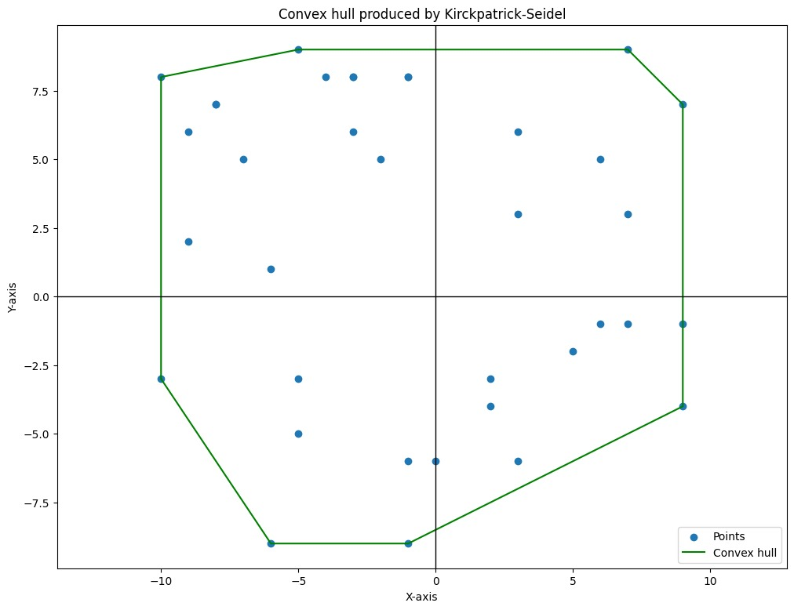

The Kirkpatrick-Seidel algorithm sophisticated computational geometry algorithm used to find the convex hull of a set of points. Unlike the Jarvis March algorithm, which is more intuitive and straightforward, the Kirkpatrick-Seidel algorithm employs a divide-and-conquer approach, making it more efficient for large sets of points. It separates the points into upper and lower hulls, constructs bridges between these hulls, and combines them to form the final convex hull.
The Kirkpatrick-Seidel algorithm consists of the following key steps:
Separating Upper and Lower Hulls: Begin by identifying the points with the least and most x-coordinates, which define a line separating the set of points into upper and lower portions. The points above this separating line, including the defining points, form the upper hull.
Handling Collinear Points: Check pairs of points in the upper hull for collinearity. If two points have the same x-coordinate, remove one of them and insert the point with the larger y-coordinate into the set of candidate points.
Median Slope Calculation: Calculate the slopes between pairs of points in the upper hull. Sort these slopes and determine the median slope.
Segregating Pairs by Slope: Segregate pairs of points based on their slopes relative to the median slope. Three categories are formed: points with slopes less than the median, points with slopes equal to the median, and points with slopes greater than the median.
Finding Supporting Line: Using the median slope, identify the supporting line by finding the maximum y-intercept among the points.
Selecting Candidate Points: Select candidate points for bridge construction based on their positions relative to the supporting line and a vertical line.
Bridge Construction: Construct bridges iteratively using the selected candidate points until only two points or fewer remain. This ensures efficient connection of the outermost points to form the convex hull.
Combining Upper and Lower Hulls: Repeat similar steps to construct the lower hull. Once both upper and lower hulls are obtained, combine them by connecting the outermost points from each hull to form the final convex hull.
The Kirkpatrick-Seidel algorithm offers a more efficient approach to computing the convex hull compared to simpler algorithms like Jarvis March, especially for large sets of points. By leveraging the divide-and-conquer strategy, it achieves better computational complexity, making it suitable for various applications in computational geometry and beyond.
/**
* Returns a new array of points with the x and y coordinates flipped.
*
* @param {Array<Array<number>>} points - The array of points to be flipped.
* @return {Array<Array<number>>} - The new array of points with flipped coordinates.
*/
export function flipped(points) {
return points.map(point => [-point[0], -point[1]]);
}
function quickSelect(ls, index, lo = 0, hi = null, depth = 0) {
if (hi === null) {
hi = ls.length - 1;
}
if (lo === hi) {
return ls[lo];
}
const pivot = Math.floor(Math.random() * (hi - lo + 1) + lo);
[ls[lo], ls[pivot]] = [ls[pivot], ls[lo]];
let cur = lo;
for (let run = lo + 1; run <= hi; run++) {
if (ls[run] < ls[lo]) {
cur++;
[ls[cur], ls[run]] = [ls[run], ls[cur]];
}
}
[ls[cur], ls[lo]] = [ls[lo], ls[cur]];
if (index < cur) {
return quickSelect(ls, index, lo, cur - 1, depth + 1);
}
else if (index > cur) {
return quickSelect(ls, index, cur + 1, hi, depth + 1);
}
else {
return ls[cur];
}
}
Computing the bridge
The concept of a bridge is a line segment that connects two points, one from each side of the
partitioned set, that is part of the convex hull.
The bridge() function is a part of the Kirkpatrick-Seidel algorithm’s implementation
for computing the convex hull of a set of points. Its specific role is to find a “bridge” between
two sets of points, divided by a vertical line, that contributes to forming the convex hull.
Here’s a detailed breakdown of what the bridge function does:
Sort Points: Sorts the points by their x-coordinate and partitions them into left
(L) and right (R) sets based on a vertical line.
Pair Points and Calculate Slopes: Pairs points from the sorted list and calculates slopes between each pair. Identifies any odd point not part of any pair.
Find Median Slope: Uses the quickSelect algorithm to find the median slope among the calculated slopes.
Identify Bridge Candidates: Based on the median slope, it identifies points that
could be part of the bridge by comparing slopes and positions relative to L and
R.
Recursive Pruning: Recursively narrows down the set of candidate points by pruning points unlikely to be part of the convex hull based on geometric criteria and the median slope.
Determine and Return the Bridge: Eventually identifies and returns the bridge, a
line segment connecting a point from L to a point in R, which is part of
the convex hull.
Finding the upper hull
Part of the convex hull which represents the upper boundary of the convex polygon
The function upperHull()calculates the upper convex hull of a set of 2D points. It
sorts the input points based on their x-coordinates, then iterates over each point. For each point,
it checks if the current point forms a counter-clockwise turn with the last two points in the upper
hull. If it doesn’t, it removes the last point in the upper hull until a counter-clockwise turn is
formed. Finally, it returns the upper convex hull.
Main function
The functionKPS(points) implements the Kirkpatrick–Seidel algorithm to compute the
convex hull of a set of 2D points. It first computes the upper hull of the points and then computes
the lower hull of the points. It ensures that the last point of the upper hull and the first point
of the lower hull are not repeated. Finally, it concatenates the upper and lower hulls to form the
convex hull.
Simulation
The function simulates KPSSimulator(points) each step of the Kirkpatrick-Seidel
algorithm. It computes the upper hull, lower hull, and convex hull separately, and returns an array
of objects representing each step. Each object contains the type of step (‘Upper Hull’, ‘Lower
Hull’, or ‘Convex Hull’) and the points involved in that step. This function is useful for
visualizing the algorithm’s progression and understanding each step.
| Time taken (ms) | n | h |
|---|---|---|
| 0.3279 | 50 | 10 |
| 0.9983 | 97 | 11 |
| 0.5254 | 66 | 12 |
| 0.3002 | 24 | 8 |
| 0.8858 | 47 | 15 |
| 0.8779 | 49 | 11 |
| 0.447 | 85 | 15 |
| 1.2575 | 9 | 4 |
| 0.6977 | 17 | 7 |
| 0.3678 | 15 | 9 |
| 0.6765 | 43 | 15 |
| 0.7336 | 68 | 11 |
| 0.432 | 56 | 9 |
| 0.3765 | 64 | 7 |
| 0.44 | 12 | 6 |
| 0.7156 | 45 | 10 |
| 0.4246 | 33 | 8 |
| 0.47 | 74 | 10 |
| 0.3841 | 36 | 9 |
| 0.4213 | 7 | 4 |
| 0.3547 | 46 | 9 |
| 0.3063 | 25 | 10 |
| 1.4337 | 97 | 13 |
| 1.0571 | 68 | 11 |
| 0.9214 | 56 | 13 |
| 0.38 | 67 | 11 |
| 0.2653 | 21 | 10 |
| 1.524 | 65 | 11 |
| 0.4682 | 94 | 11 |
| 0.9127 | 97 | 11 |
| 0.9585 | 27 | 12 |
| 0.8113 | 38 | 14 |
| 0.5587 | 85 | 14 |
| 0.6559 | 10 | 6 |
| Memory consumed (KB) | n | h |
|---|---|---|
| 5603.12 | 50 | 10 |
| 5665.9 | 97 | 11 |
| 5618.67 | 66 | 12 |
| 5586.23 | 24 | 8 |
| 5609.66 | 47 | 15 |
| 5572.72 | 49 | 11 |
| 5577.48 | 85 | 15 |
| 5576.91 | 9 | 4 |
| 5578.99 | 17 | 7 |
| 5579.76 | 15 | 9 |
| 5610.92 | 43 | 15 |
| 5629.34 | 68 | 11 |
| 5621.16 | 56 | 9 |
| 5628.0 | 64 | 7 |
| 5577.19 | 12 | 6 |
| 5599.71 | 45 | 10 |
| 5596.96 | 33 | 8 |
| 5635.31 | 74 | 10 |
| 5596.14 | 36 | 9 |
| 5575.09 | 7 | 4 |
| 5613.55 | 46 | 9 |
| 5589.79 | 25 | 10 |
| 5672.55 | 97 | 13 |
| 5637.08 | 68 | 11 |
| 5618.01 | 56 | 13 |
| 5631.9 | 67 | 11 |
| 5580.34 | 21 | 10 |
| 5635.42 | 65 | 11 |
| 5665.54 | 94 | 11 |
| 5668.66 | 97 | 11 |
| 5589.86 | 27 | 12 |
| 5595.6 | 38 | 14 |
| 5646.13 | 85 | 14 |
| 5575.99 | 10 | 6 |
Taking 36 points as input
n =[
[ -10, -3 ], [ -10, 8 ], [ -9, 2 ],[ -9, 6 ], [ -8, 7 ], [ -8, 7 ],
[ -7, 5 ], [ -6, -9 ], [ -6, 1 ],[ -5, -5 ], [ -5, -3 ], [ -5, 9 ],
[ -4, 8 ], [ -3, 6 ], [ -3, 8 ],[ -3, 8 ], [ -2, 5 ], [ -1, -9 ],[ -1, -6 ], [ -1, 8 ], [ -1, 8
],
[ 0, -6 ],[2, -4 ], [ 2, -3 ],[ 3, -6 ], [ 3, 3 ], [ 3, 6 ],[ 5, -2 ], [ 6, -1 ], [ 6, 5 ],
[ 7, -1 ], [ 7, 3 ], [ 7, 9 ],[ 9, -4 ], [ 9, -1 ], [ 9, 7 ]
]
ConvexHull =h = [
[ -10, -3 ], [ -10, 8 ],
[ -5, 9 ], [ 7, 9 ],
[ 9, 7 ], [ 9, -4 ],
[ -1, -9 ], [ -6, -9 ]
]
Plot of the convex hull

Taking only 2 points as input
n=[ [ 1, 1 ], [ 3, 2 ] ]
convexHull=[]
Convex hull cannot constructed for less than 3 points
Taking 3 collinear points
n=[[1,1],[2,2],[4,4]]
convexHull=[]
A polygon is a plane figure that consists of finite number of line segments which connected to form
a
closed polygonal chain. A single line segment itself doesn’t form a closed
polygonal
chain.
Thus, a line segment cannot be a Convex Hull.